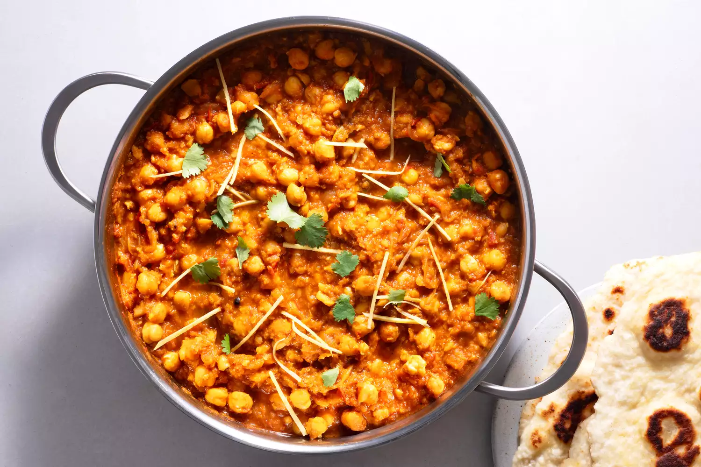

Chole Masala

This Punjabi Chana Masala, also known as Chole Masala, is an authentic North Indian style curry made with white chickpeas,
freshly powdered spices, onions, tomatoes and herbs. Naturally vegan and packed with healthy minerals, protein and fiber,
this delicious vegetarian meal can be ready in just 45 minutes minus the soaking time of chickpeas.
Ingredients
To pressure cook
- 2 cup + 2 tbsp of chickpeas
- 5-6 cardamom
- 4-5 black peppercorns
- 2 bay leaves
- 2 cinnamon sticks
- 1 garlic clove
- 2 tea bags
- salt to taste
- 5 cups of water
For the chole
- 3/4 cup of grated or pureed onion (2 small onions)
- 2½ cups of pureed tomatoes (4 medium tomatoes)
- 3-4 cloves of garlic
- 2 tsp of garlic paste
- 3 tsp of chole masala
- 3-4 tsp of cumin powder
- 1/2 tsp of paprika powder
- 1/2 tsp of rec chili powder, or to taste
- salt to taste
To garnish
- 1 tbsp of ghee
- 1 inch ginger, cut into strips
- 2 tbsp corriander leaves, chopped
- 1/4 tsp of garam masala
Method
- Soak the chickpeas overnight in enough water to cover them. In the morning, drain the water.
- In a pressure cooker add the soaked and drained chickpeas, 2 tea bags, bay leaves, cardamom,
cinnamon stick, salt and 4 to 5 cups water. Pressure cook at high flame till you get 1-2 whistles.
After that lower the flame to medium and let the chickpeas cook for another 10-12 minutes.
- In a wok, heat 1 tablespoon of oil. Once hot, add cloves and grated onions. Fry the onions till the
smell goes away and they are light golden brown in color.
- Add ginger-garlic paste and cook for 3-4 minutes till the smell of ginger-garlic goes away.
- Now add the tomato puree , stir and let it cook for 12-15 minutes on medium-low flame. Cover the pan to prevent the splash all around.
- Add the chole masala, red chilli powder, paprika powder, cumin powder, salt and mix for a 1-2 minutes.
- Add the chickpeas next and stir will all the chickpeas are coated with the spices, around 2 minutes.
- Add water (which was used for boiling the chickpeas), cover the pan and let it simmer at medium-low flame for around 30 minutes.
The gravy will thicken after 30 minutes so add water accordingly.
- To temper, heat 1 tbsp of ghee in a pan and the ginger julienne to it.
- Fry till the juliennes are golden brown in color but do not burn them. Add to the chole curry, mix and switch off the flame.
- Sprinkle some garam masala, kasuri methi and garnish with chopped coriander leaves.
- Serve with roti, paratha or plain rice.